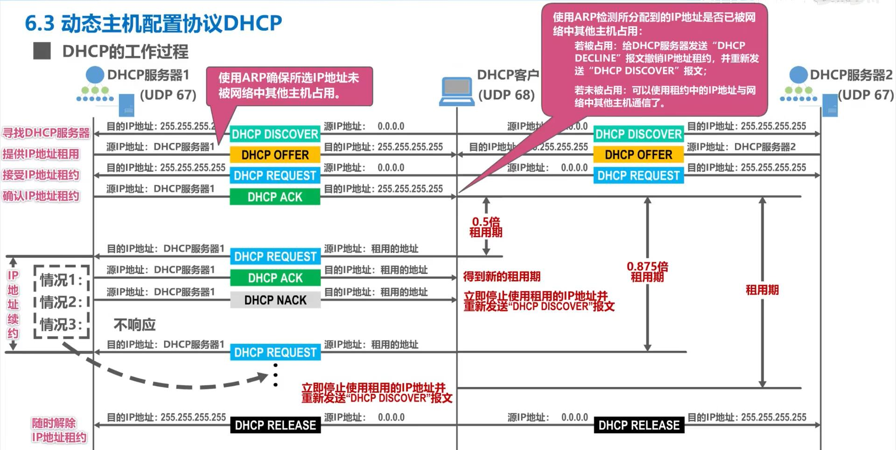
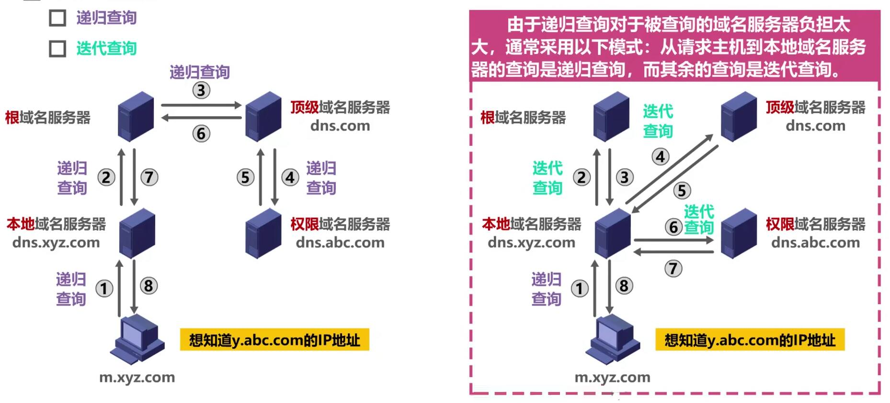
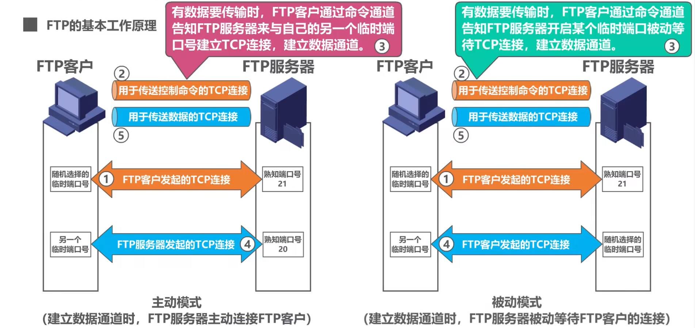
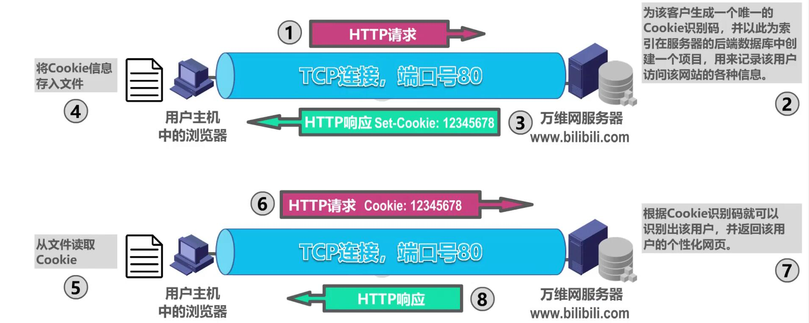

计算机网络-应用层
应用层是计算机网路体系结构的最顶层，是设计和建立计算机网络的最终目的，也是计算机网络中发展最快的部分。 客户/服务器方式（C/S方式） - 客户和服务器指通信中所涉及的两个应用进程； - 描述进程之间服务和被服务的关系； - 基于C/S方式的应用服务通常是服务集中型的，如WWW、电子邮件、FTP等； 对等方式（P2P方式） - 没有固定的服务请求者和服务提供者，对等方之间直接通信； - 基于P2P的应用是服务分散型的，如P2P文件共享、即时通信、P2P流媒体、分布式存储等； - P2P最突出的特性之一是可扩展性，系统性能不会因规模的增大而降低； ## 一、动态主机配置协议DHCO DHCP提供了即插即用连网的机制，允许一台计算机加入新网络时可自动获取IP地址等网络配置信息而不用手工参与。 工作过程 - DHCP客户广播发送DHCP发现报文（封装DHCP客户端MAC地址、事物ID等内容），源IP地址为0.0.0.0； - DHCP服务器根据DHCP发现报文内封装的DHCP客户端MAC地址查找数据库，若有针对该MAC地址的配置信息（IP地址、子网掩码、地址租期、默认网关、DNS服务器等）则用这些信息构建并广播发送DHCP提供报文，没有则用默认配置信息； - DHCP客户根据报文中的事务ID判断是否接收，若接收则广播发送DHCP请求报文（封装DHCP客户端MAC地址、事物ID、接受的租约中的IP地址、DHCP服务器端IP地址）； - DHCP服务器广播发送DHCP确认报文； - 租用期过了一半后，客户向服务器发送DHCP请求报文，服务器发送反馈；  使用DHCP中继代理（给路由器配置DHCP服务器的IP地址）可以不用在每个网络上都设置一个DHCP服务器。 ## 二、域名系统DNS 域名系统DNS是因特网使用的命名系统，用来把便于人们记忆的具有特定含义的主机名转化为便于机器处理的IP地址。 因特网采用层次树状结构的域名结构：······.三级域名.二级域名.顶级域名。 - 顶级域名TLD分为国家顶级域名nTLD、通用顶级域名gTLD、反向域arpa； 域名和IP地址的映射关系必须保存在域名服务器中，供所有其他应用查询。DNS使用分布在各地的域名服务器来实现域名到IP地址的转换。 - 域名服务器可分为根域名服务器、顶级域名服务器、权限域名服务器、本地域名服务器； 域名解析过程查找方式：递归查询和迭代查询；  域名服务器中广泛使用了高速缓存，同来存放最近查询过的域名以及从何处获得域名映射信息的记录，以提高DNS查询效率。 - 域名服务器应为每项内容设置计时器并删除超过合理时间的项； - 用户主机中也很需要高速缓存； ## 三、文件传输协议FTP 文件传送协议FTP是因特网上使用得最广泛的文件传送协议。 - 提高交互式的访问，允许客户指明文件的类型、格式、存取权限； - 屏蔽了各计算机系统的细节，适合在各异构网络中任意计算机之间传送文件； 基本工作原理： - FTP客户和服务器之间要建立以下两个并行的TCP连接： - ①控制连接，整个会话期间一直打开，用于传送FTP相关控制命令； - ②数据连接，用于文件传输，每次文件传输时才建立，传输结束就关闭； - 默认情况下，FTP使用TCP21端口进行控制连接，TCP20端口进行数据连接。但是TCP20端口建立数据连接与传输模式有关，主动方式使用TCP20端口，被动方式由服务器和客户端自行协商决定；  ## 四、电子邮件 电子邮件采用C/S方式。三个组成构件：用户代理、邮件服务器，以及电子邮件所需要的协议。 - 用户代理是用户与电子邮件系统的接口，又称电子邮件客户端软件； - 邮件服务器是电子邮件系统的基础设施，因特网上所有的ISP都要邮件服务器，其功能是发送和接收邮件，同时还要负责维护用户的邮箱； - 协议包括邮件发送协议（如SMTP）和读取协议（如POP3）； #### 邮件发送协议 常用的邮件发送协议是简单邮件传送协议SMTP； - 基于TCP连接，端口号25； - 只能传送ASCII码文本； - 用于用户代理向邮件服务器发送邮件以及邮件服务器之间的邮件发送； 为解决SMTP传送非ASCII码文本的问题，提出了多用途因特网邮件扩展MIME； #### 邮件读取协议 常用的邮件读取协议有邮局协议POP3和因特网邮件访问协议IMAP； - 邮局协议POP3：非常简单、功能有限，不允许用户在邮件服务器上管理自己的邮件； - 因特网邮件访问协议IMAP：用户在自己的计算机上就可以操控邮件服务器的中的邮箱，IMAP是一个联机协议； - POP3和IMAP4都采用基于TCP连接的C/S方式，端口号分别为110和143； #### 基于万维网的电子邮件 通过浏览器登录邮件服务器万维网网站就可以撰写、收发、阅读和管理电子邮件，这种工作模式与IMAP很类似。 用户浏览器与邮件服务器网站之间使用HTTP协议，邮件服务器之间使用SMTP协议。 ## 五、万维网WWW 万维网是一个大规模的、联机式的信息储藏所，是运行在因特网上的一个分布式应用。 - 万维网利用网页之间的超链接 - 万维网使用统一资源定位符URL来指明因特网上任何种类“资源”的位置； #### 万维网文档 超文本标记语言HTML，使用多种标签来描述网页的结构和内容。 层叠样式表CSS，从审美角度来描述网页的样式。 脚本语言Javascript控制网页的行为。 #### 超文本传输协议HTTP 定义了浏览器（即万维网客户进程）怎样向万维网服务器请求万维网文档，以及万维网服务器怎样把万维网文档传送给浏览器。 - HTTP/1.0采用非连续连接方式，每次浏览器要请求一个文件都要与服务器建立TCP连接（80端口），收到响应后立即关闭连接； - HTTP/1.1采用持续连接方式，万维网服务器在发送响应后仍然保持连接，以便传送后续HTTP请求和响应报文。为了进一步提高效率，还可采用流水线方式，浏览器在收到响应报文前就可连续发送多个请求报文； HTTP有两类报文：请求报文和响应报文 - 报文中的每个字段都是一些ASCII码串，并且每个字段的长度都是不确定的； #### Cookie和缓存机制 Cookie提高一种机制使得万维网服务器能够记住用户，而无需用户主动提供用户标识信息。Cookie是一种对无状态的HTTP进行状态化的技术。 
在万维网中还可以使用缓存机制以提高万维网的效率，万维网缓存又称为Web缓存，可位于客户机上，也可位于中间系统上（又称为代理服务器） - Web缓存把最近的一些请求和响应暂存在本地磁盘中,当新请求到达时,若发现其与暂存的请求相同,就返回暂存的响应，而不需要按URL地址再次去因特网访问该资源； - 原始服务器会为每个响应对象设定修改时间字段和有效日期字段，代理服务器调用Web缓存时会询问原始服务器是否过期；